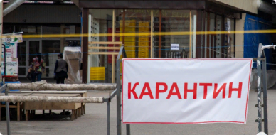
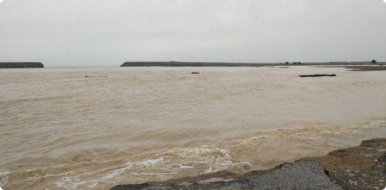

SAMARQANDLIKLAR24
$
10137.2
P
138.26
E
10988.72
 Подписаться
Подписаться
SAMARQANDLIKLAR24 |
$ |
10137.2 |
P |
138.26 |
E |
10988.72 |
Подписаться
|
| Узбекистан | Мир | Экономика | Общество | Технологии | Спорт | Культура | Происшествия | Туризм |

|
|
Коронавирус
COVID-19 в Узбекистане |
.png)
|
Инфицированы
2753 |
.png)
|
Выздоровели
2245 |
Умерли |
 Мирзиеев рассказалб зачем было построена
Мирзиеев рассказалб зачем было построена Сардобинское Водохранилище 05:28/16.05.2020 |

Карантин в Узбекистане продлен до 1 июня 05:28/16.05.2020 |

Обмалевшая Сардоба:Стихия или 05:28/16.05.2020 |
|
Следствия проверяет чытеры версии 05:28/16.05.2020 |

выявленоеще 7 случаев короновируса 05:28/16.05.2020 |

Итоги втрого месяца карантина 05:28/16.05.2020 |

|
Хотите узнать новости первыми? подключите уведомления! |
|
|

|
Всегда будьте в курсе последних новостей!
Установите мобильное приложение SAMARQANDLIKLAR24 |

|

|
| SAMARQANDLIKLAR 24 | Подписывайтесь на наш канал в Telegram и будьте всегда в курсе самых последних новостей: |

|
||
|
О сайте Воспроизводство, копирование, тиражирование, распростране ние и иное использование информации с сайта «SAMARQANDLIKLAR24.UZ» возможно только с предварительного письменного разрешения редакции. |
Использование материалов
Темы дня Наша команда |
|